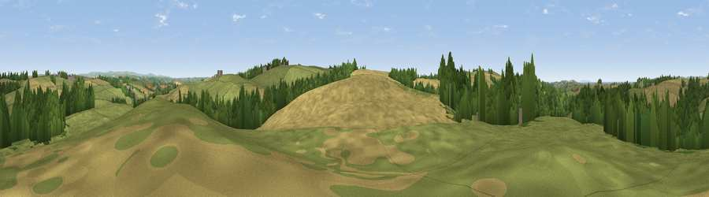

Viewpoint near Alverdiscott
#18296 in England · top 40% of its area beats it · near Alverdiscott · path 274 mWhere it is
The exact computed spot (SS 51175 26125). Click the marker for map links.
Public access: the nearest public right of way is about 274 m away — the final stretch may cross private land. Computed from Natural England's CRoW access layer and OpenStreetMap rights of way — not the legal definitive map. Always verify locally.
The view, rendered

A 360° render of this exact spot computed from the terrain model, tree cover and land cover — summer colours, afternoon light, calibrated against photographs of famous viewpoints. Real trees, hedges and buildings will differ in detail.
The panorama
Grey silhouette: terrain skyline in each direction (720 bearings, Earth curvature and refraction included). Dashed green: skyline with trees (+15 m) and buildings (+8 m) as obstacles. Blue strip: how far the ground is visible on each bearing.
Where the view opens
Wedge length = distance to the farthest visible ground on that bearing (vegetation-aware). Rings at 10, 25 and 50 km.
What fills the view
47% grassland · 33% cropland · 19% woodland ·
Angular shares of the visible panorama (visual magnitude), not map area. Landscape diversity 0.47 (0–1 Shannon).
Key numbers
More beautiful places nearby
The staircase of upgrades: each row has a higher view potential than everything closer. Driving times are estimates from straight-line distance, calibrated against real road routing — check an actual route before setting out.
| Place | Direction | Drive | Score |
|---|---|---|---|
| Viewpoint near Alverdiscott | WSW · 2 km | ~5 min | 71.7 |
| Viewpoint near Bideford | WSW · 4 km | ~9 min | 73.5 |
| Viewpoint near Bishop's Tawton | ENE · 7 km | ~15 min | 73.8 |
| Codden Hill | ENE · 8 km | ~16 min | 81.3 |
| Viewpoint near Parkham | WSW · 13 km | ~23 min | 81.7 |
| Viewpoint near Croyde | NNW · 14 km | ~25 min | 83.7 |
| Viewpoint near Bucks Mills | WSW · 14 km | ~25 min | 84.0 |
| Viewpoint near Woolacombe | NNW · 17 km | ~29 min | 84.7 |
51.01519, -4.12304 · source: screening · position refined by local search. Computed location — check access rights before visiting.